Research
Generative vision without retraining
Training-free and test-time optimization methods that keep frozen diffusion models consistent, for camera-controlled multi-view synthesis and compositional video generation.
3D scene modeling
Neural graphics primitives that learn many scenes one after another inside a single model, without catastrophic forgetting.
Decoding the brain
Generative architectures that reconstruct still and moving visual stimuli from EEG, with a focus on latent space alignment and semantic analysis.
I am also interested in representation learning, graph neural networks, multimodal learning, neural rendering and brain-computer interfaces.
Publications
Papers
-
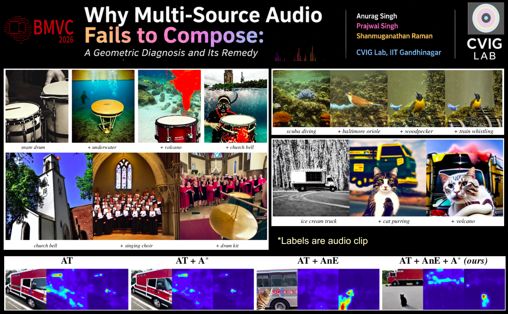
Why Multi-Source Audio Fails to Compose: A Geometric Diagnosis and Its Remedy
BMVC 2026
This paper explains why multi-source audio-to-image generation fails. Audio tokens sit in misaligned regions of CLIP space, so objects get ignored or merged. CLAP-based tokens and spatially separated cross-attention fix this and give faithful images of every sound source.
-
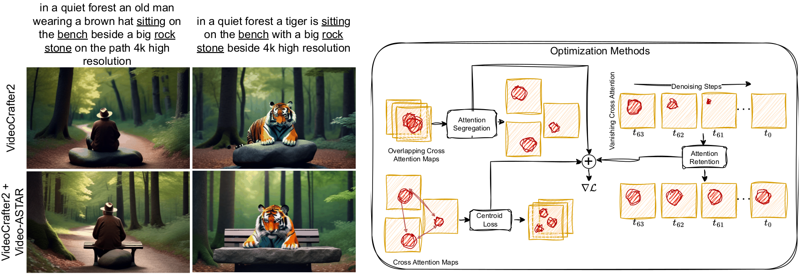
Synthesizing Compositional Videos from Text Description
WACV 2026
A training-free method for compositional video generation from a text prompt, built on a pre-trained video diffusion model. Video-ASTAR optimizes the cross-attention maps with a centroid loss and beats baselines in extensive experiments and ablations.
-
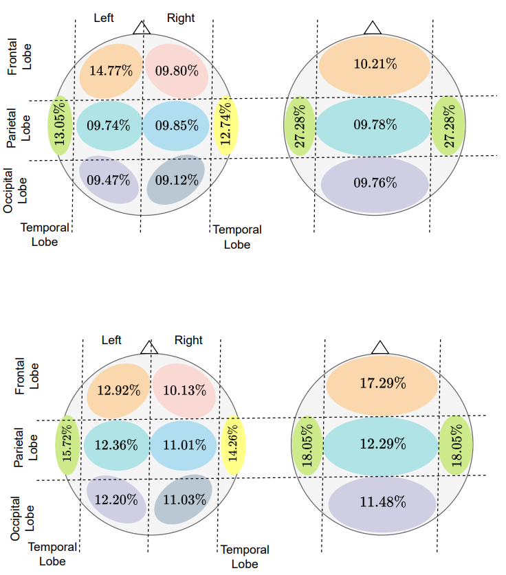
Beyond Reconstruction: What EEG-to-Video Decoding Actually Recovers
Preprint
We study the dynamic visual information encoded in EEG and show that it can be reconstructed with temporally conditioned generative models. The work also asks what EEG-to-video decoding actually recovers of continuous visual experience.
-
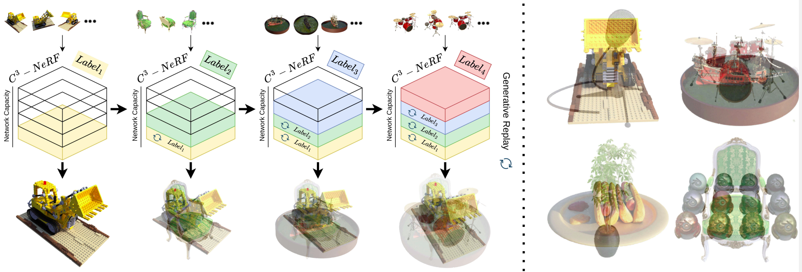
Incremental Multi-Scene Modeling via Continual Neural Graphics Primitives
BMVC 2025
C-NGP encodes many 3D scenes in a single NeRF, conditioned on pseudo-scene labels. It learns continually with minimal forgetting and renders high quality novel views across scenes without adding parameters.
-
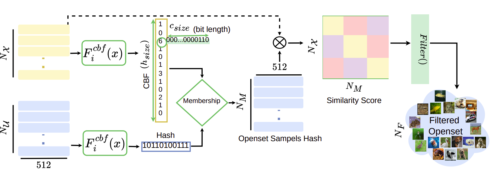
BloomCoreset: Fast Coreset Sampling using Bloom Filters for Fine-Grained Self-Supervised Learning
ICASSP 2025
BloomCoreset stores and retrieves image features with Bloom filters for fine-grained self-supervised learning. It cuts sampling time from large unlabeled datasets by 98.5% at a 0.83% accuracy cost across 11 downstream tasks, and plugs into the SimCore framework.
-
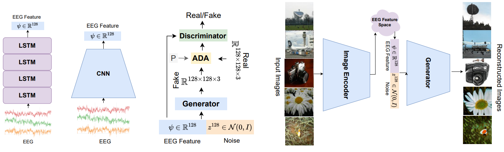
Learning Robust Deep Visual Representations from EEG Brain Recordings
WACV 2024Featured in WACV DailyBest of WACV 2024
A two-stage method that learns deep visual representations from EEG features. It generalizes across datasets and outperforms GAN-based baselines on EEG-based image reconstruction and classification.
-
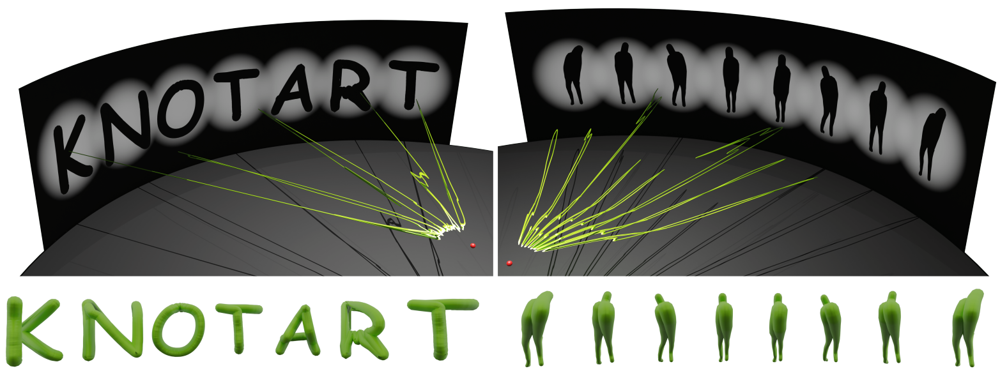
Search Me Knot, Render Me Knot: Embedding Search and Differentiable Rendering of Knots in 3D
Computer Graphics Forum 2024
A fully differentiable framework for designing 3D tubular knots that resemble a target image from chosen viewpoints. It pairs an invertible neural network with physically constrained optimization, validated by experiments, ablations and a 3D-printed object.
-
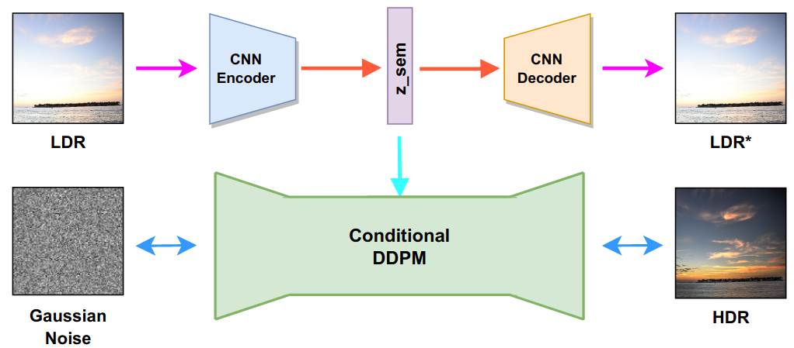
Single Image LDR to HDR Conversion using Conditional Diffusion
ICIP 2023
We cast single-image LDR to HDR conversion as image-to-image translation and solve it with a conditional diffusion model using classifier-free guidance. A CNN autoencoder improves the latent representation of the LDR image used for conditioning.
-
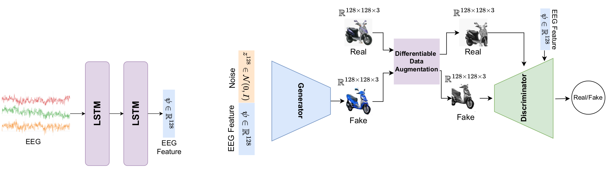
EEG2IMAGE: Image Reconstruction from EEG Brain Signals
ICASSP 2023
Contrastive learning extracts features from EEG signals, and a conditional GAN synthesizes images from them. A modified GAN loss lets the model produce 128x128 images from a small training set.
-
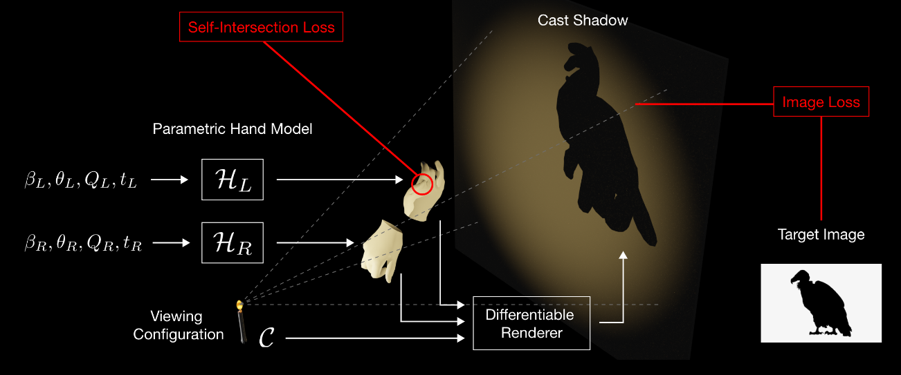
Hand Shadow Art: A Differentiable Rendering Perspective
Pacific Graphics 2023, PosterBest Poster Award
Differentiable rendering deforms hand models so that the shadows they cast resemble a target image.
-

TreeGCN-ED: Encoding Point Cloud using a Tree-Structured Graph Network
Pacific Graphics 2023, Poster
A tree-structured autoencoder that builds robust point cloud embeddings from hierarchical information using graph convolution. Experiments and a t-SNE map show it separates object classes well.
-
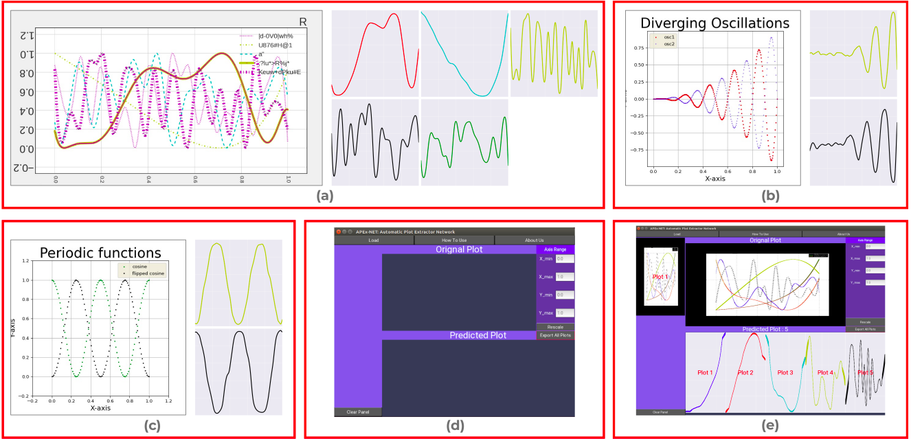
APEX-Net: Automatic Plot Extractor Network
NCC 2022
A deep learning framework with new loss functions that extracts data from plot images and cuts down manual effort. We also release APEX-1M, a large dataset of plot images paired with their raw data.
-
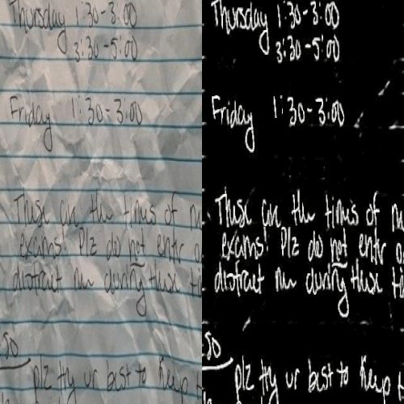
LS-HDIB: A Large Scale Handwritten Document Image Binarization Dataset
ICPR 2022
A dataset of one million challenging handwritten document images with accurate segmentation ground truth, built for handwritten document image binarization.
-
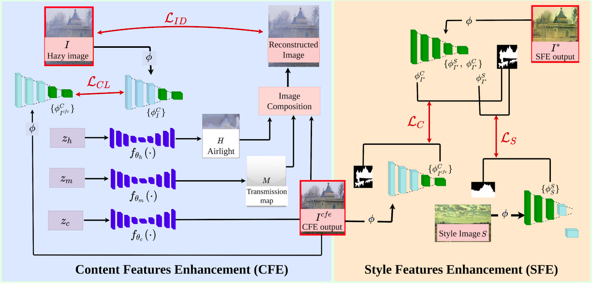
DILIE: Deep Internal Learning for Image Enhancement
WACV 2022, VAQ Workshop
Image enhancement with deep internal learning. DILIE improves content and style features while preserving the semantics of the enhanced image.
Experience
- NowPostdoctoral fellowCVIG Lab, IIT Gandhinagar, India
- May 2025 to Oct 2025PhD research internChat3D, France (online)
- May 2024 to Nov 2024PhD research internAdobe, Bangalore, India
- May 2021 to Sep 2021Junior research fellowIIT Gandhinagar, India
- May 2019 to Jun 2019Freelancer, GATE CSEGradeup (Gradestack Learning Pvt Ltd)
Education
- Oct 2021 to May 2026PhD in Computer ScienceIIT Gandhinagar, India. PMRF scholar, advised by Dr. Shanmuganathan Raman. CGPA 9.71/10.Thesis: Scalable Generative Vision and Neural Decoding: Connecting Machine and Human Perception
- Jul 2019 to May 2021M.Tech. in Computer Science and EngineeringIIT Gandhinagar, India. Advised by Dr. Shanmuganathan Raman. CGPA 8.89/10.Thesis: Generating 3D Shapes and Images from the Embedding of Images and Text
Recognition
- 2024Learning Robust Deep Visual Representations from EEG Brain Recordings featured in WACV Daily and Best of WACV 2024.
- 2023Best Poster Award at Pacific Graphics for Hand Shadow Art: A Differentiable Rendering Perspective.
- 2021 to 2026Prime Minister's Research Fellowship (PMRF).
- 2019GATE CS: 98.69 percentile, rank 1,309 out of 99,932 candidates.